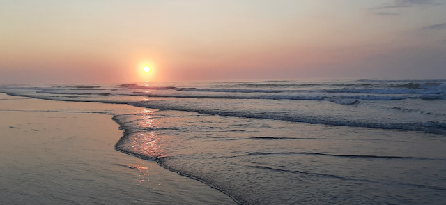
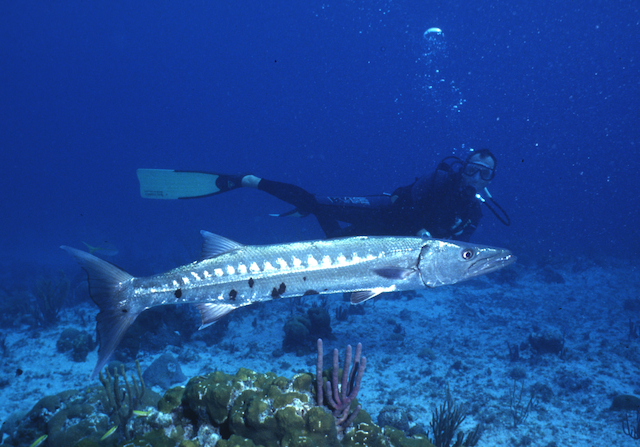
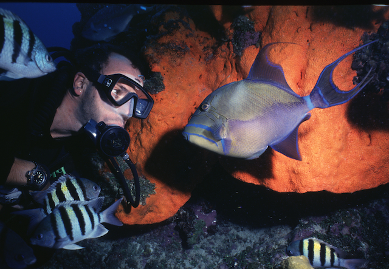
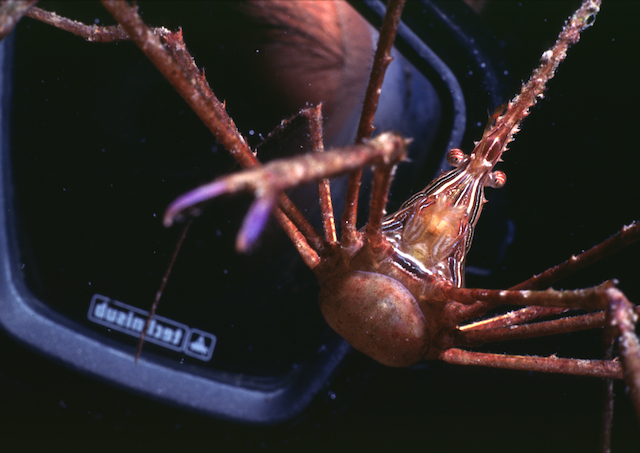

Have one of your galactic survey teams discovered an unexplored water world in some far-flung corner of the galaxy? Let our teams of experienced astro-aquanauts prospect your new planet to determine what resources are present, the economic feasability of utilizing found reserves and analysis of the posibilities for colonization by aqua-geneticly altered humans. Here are just a few of our recent success stories:
Recent Projects

Oceana
One our prospectors guiding a remote-controled robot as it investigates novel mineral resources on the planet Oceana. We discovered a vast supply of irridescent gloopies on this world which our client used to corner the market on shimmery eye-shadow in their quarter of the galaxy.

Hydrosia
A robot miner, shown with our prospector, searching all over Hydrosia for an Enchanged Golden Apple. Our client was tired of looking for one in Minecraft, so he hired us to search for them on Hydrosia. We have delivered 42 as of last report.

Aqualis
Here's one of our prospectors with a miniature robot looking in all the nooks and crannies on Aqualis for something special. Our client made a fortune when we found an oradinous gel with a special property. When you put the gel on your eye, it allows you to see through any makeup, prosthetic or disguise someone is wearing on their face. A big hit with those who are engaged to be married!
Customer Reviews
Beezub Florkee
I thought I was going to have to sell my house and kids to pay for the loss I was taking on that miserable planet. Then Water World Development, LLC came to my rescue! They found the planet has a noxious gas that works as the best paint stripper ever! Thanks WWD! You beings are great!
Fiona Maisie Kensington-Pennington
Water World Development, LLC helped us develop one of our many planets into the poshest, upscale recreation destinations for the exclusive, highbrow socially-acceptable superior clientele. Thank you WWD, you earned your pay, but please stop asking to vacation on our planet.
Ned Stump
We's wanted to wring every last bit of moolah out of that wet ball of mud. WWD helped us wring every last centon of dough out of that lousy planet. If youse wants the biggest bang for your buck, hire these guys! They even helped cook the books to keep galactic revenuers off our tail!